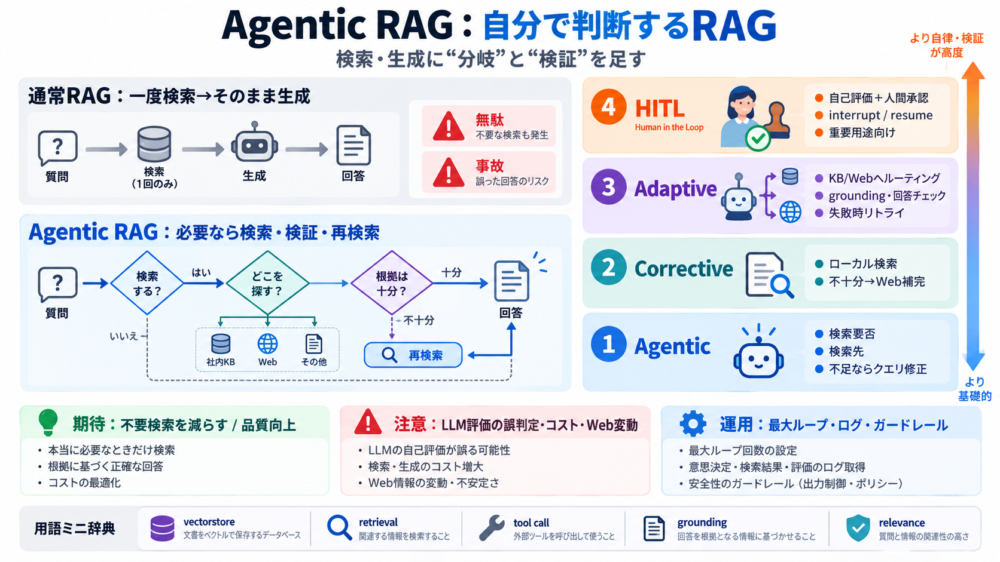

langgraph-human-in-the-loop | Claude Skills & Agent ...
`interrupt()` `from langgraph.types import interrupt, Command from langgraph.checkpoint.memory import InMemorySaver from…

自分で判断するRAG
検索＋生成（RAG）に「分岐する仕組み（agent）」を足し、検索要否・検索先・再検索・採否をLLMに任せます。
本デッキは LangGraph の4つのNotebook（パターン）を、どこで判断・どこで検証するかの観点で圧縮整理します。
固定パイプラインの限界
通常のRAGは「一度検索→そのまま生成」が基本で、状況に応じた“検索の要否”や“検索先”の切り替えが苦手です。
判断をワークフローへ
Agentic RAGはLLMが「検索が必要か」「どのナレッジベースか」「根拠が足りないなら修正や再検索」を状況に応じて選びます。
4つの段階的パターン
「Agentic」「Corrective」「Adaptive」「Human-in-the-Loop」を、自己完結Jupyter Notebookとして比較できるリポジトリです。
最初の判断：Agentic
LLMが「検索するか」「どの知識源を検索するか」「取得が十分なら回答、足りなければクエリ修正」をツール呼び出しで分岐します。
ローカルで不十分なら
まずローカル文書を検索し、関連性が不十分なら Tavily によるライブWeb検索へフォールバックします。
ルーティング＋自己検証
冒頭で「ローカルベクトルへ送るかWebへ行くか」をルーティングし、生成後も grounding（根拠）と回答適合性を自己チェックします。
最終判断は人へ
Adaptiveと同様に自己評価を行いつつ、判断の最終権限を人間に移します。LangGraph の interrupt/resume で承認・修正を挟めます。
知っておくと速い語
理解を早めるため、RAG・vectorstore・ツール呼び出し・自己評価（grounding/relevance/ hallucination対策）の役割だけ整理します。
効きそうな理由
Agenticにより「不要検索を減らす」「誤りに気づいて修正へ寄せる」ことが狙えます。一方、自己判断が外れると逆効果の可能性もあります。
自信確認の深さ
自信確認（自己チェック）が増えるほど、自動での修正・リトライが可能になり、ただしLLM評価依存のリスクとコストも増えます。
落とし穴：評価は推定
自己評価はLLMの推定なので、誤判定で自動リトライが増える可能性があります。重要用途ではHITLや追加検証が無難です。
動かすための要点
ローカル埋め込み（sentence-transformers：bge-m3）とChroma、APIキー（GROQ/Tavily）、uv環境、そして“実行時の変動要因”を前提に理解します。
結論：選べる設計
このリポジトリは、Agentic→Corrective→Adaptive→HITLへと段階的に「判断・検証・責任分界」を見せます。
`interrupt()` `from langgraph.types import interrupt, Command from langgraph.checkpoint.memory import InMemorySaver from…
4. Resume Mechanism: A way to feed human input back into the graph using the `Command` primitive. ## 3. Multiple Approa…
from typing import TypedDict from typing import TypedDict from langgraph.checkpoint.memory import MemorySaver from la…
`import uuid from typing import TypedDict, Annotated from autobahn.wamp.gen.wamp.proto.AnyMessage import AnyMessage from…
`from FlagEmbedding import BGEM3FlagModel model = BGEM3FlagModel('BAAI/bge-m3', use_fp16=True) # Setting use_fp16 to Tru…